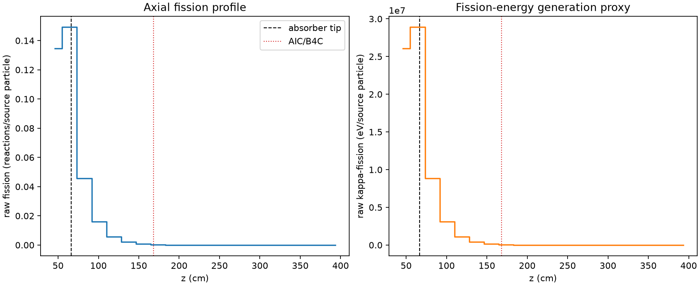
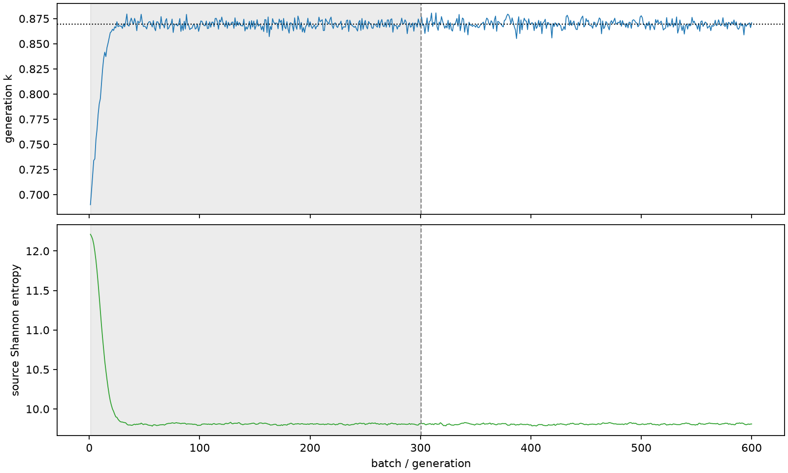

| field | value |
|---|---|
| experiment | V2-STAGE_256_OGRENCI_01-0004 |
| k | 0.8694953939238493 |
| MC standard error | 0.00016899575267270326 |
| seconds | 1034.5414595800103 |
| acceptance | not_assessed |
| convergence | review_required |
Completed is output integrity only; physical and statistical review required. Zero tallies do not prove zero production or zero uncertainty.
| diagnostic | value |
|---|---|
| geometric fuel voxels | 5280 |
| zero fission tally voxels | 1602 |
| low signal fuel voxels | 2928 |
| low signal fission share | 8.952539965807158e-05 |
| low signal kappa share | 8.956962959575611e-05 |
| important fission share | 0.9500072730815525 |
| previous filter included | 2352 |
| duration estimate s | 1562.5173488400023 |
| actual minus estimate s | -527.9758892599921 |
| fission relative MC error | statistics |
|---|---|
| all_geometric_fuel | {"voxels": 5280, "positive_mean_voxels": 3678, "zero_mean_voxels": 1602, "undefined_relative_error_voxels": 1602, "median": 0.05918189801236562, "p95": 0.9999999999999998, "maximum": 1.0000000000000002} |
| low_signal | {"voxels": 2928, "positive_mean_voxels": 1326, "zero_mean_voxels": 1602, "undefined_relative_error_voxels": 1602, "median": 0.6555956795866487, "p95": 1.0, "maximum": 1.0000000000000002} |
| important_95pct | {"voxels": 893, "positive_mean_voxels": 893, "zero_mean_voxels": 0, "undefined_relative_error_voxels": 0, "median": 0.004168139851972067, "p95": 0.010974825712256941, "maximum": 0.01225961487306688} |
| outside_previous_filter | {"voxels": 2928, "positive_mean_voxels": 1326, "zero_mean_voxels": 1602, "undefined_relative_error_voxels": 1602, "median": 0.6555956795866487, "p95": 1.0, "maximum": 1.0000000000000002} |
| kappa_fission relative MC error | statistics |
|---|---|
| all_geometric_fuel | {"voxels": 5280, "positive_mean_voxels": 3678, "zero_mean_voxels": 1602, "undefined_relative_error_voxels": 1602, "median": 0.05908214768729044, "p95": 0.9999999999999998, "maximum": 1.0000000000000002} |
| low_signal | {"voxels": 2928, "positive_mean_voxels": 1326, "zero_mean_voxels": 1602, "undefined_relative_error_voxels": 1602, "median": 0.6558537500247925, "p95": 1.0, "maximum": 1.0000000000000002} |
| important_95pct | {"voxels": 893, "positive_mean_voxels": 893, "zero_mean_voxels": 0, "undefined_relative_error_voxels": 0, "median": 0.00416242252456617, "p95": 0.010957152253771517, "maximum": 0.012241019973192657} |
| outside_previous_filter | {"voxels": 2928, "positive_mean_voxels": 1326, "zero_mean_voxels": 1602, "undefined_relative_error_voxels": 1602, "median": 0.6558537500247925, "p95": 1.0, "maximum": 1.0000000000000002} |
| axial bin | fission share | kappa-fission share |
|---|---|---|
| 1 | 0.37991392070093505 | 0.3798791710634403 |
| 2 | 0.4212029572728009 | 0.4211820294660222 |
| 3 | 0.12869004188090014 | 0.1287255295325912 |
| 4 | 0.04555076519765685 | 0.045563579436777156 |
| 5 | 0.01603104533203851 | 0.016035779978644256 |
| 6 | 0.005773708978268386 | 0.005775374620138228 |
| 7 | 0.0019873614695585353 | 0.0019879595054379732 |
| 8 | 0.000601425665116882 | 0.0006016801327027831 |
| 9 | 0.0001748083473266715 | 0.00017489489839809592 |
| 10 | 5.1925880512903395e-05 | 5.195001080153391e-05 |
| 11 | 1.4476843977365312e-05 | 1.4483624621214545e-05 |
| 12 | 4.498136296835897e-06 | 4.499345965082588e-06 |
| 13 | 1.8140063952317797e-06 | 1.815418381681296e-06 |
| 14 | 1.0317318039549105e-06 | 1.034238669294026e-06 |
| 15 | 2.1855641184144726e-07 | 2.1872740888959865e-07 |
| 16 | 0.0 | 0.0 |
| 17 | 0.0 | 0.0 |
| 18 | 0.0 | 0.0 |
| 19 | 0.0 | 0.0 |
| 20 | 0.0 | 0.0 |
Histories include the inactive-to-active transition at batch 300. kappa-fission approximates fission energy production, not total heat deposition.

